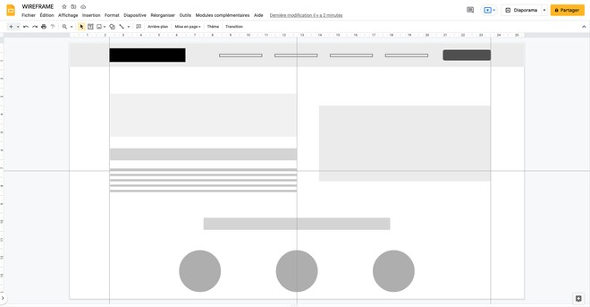
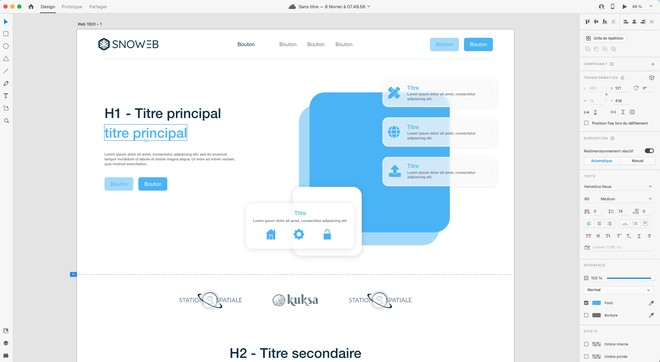
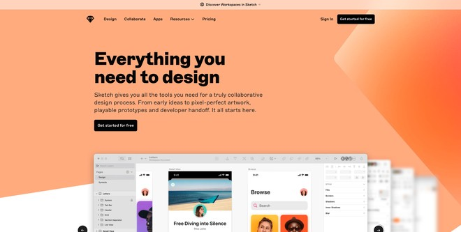
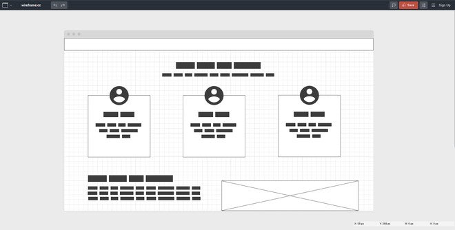

WEB DESIGN
HOW TO MAKE WEBSITE ?
Wanting to create a website is a thing more and more anchored in the minds.
In fact, a website allows to present to potential customers the services, actions or achievements made by a person or a company.
But before launching into the development of a website to think about its architecture and its appearance.

Nithya shri.G
2. The steps to create a website model ?
2.1 Starting from a blank page, obsolete or important?
Personally, I'm a paper and pencil lover, strange for a web designer? Well, no! I always start a creation, a model or an illustration with sketches.
Regarding the creation of a model, on paper, we can already make the wireframe or zoning. This allows you to sort out and put your ideas in place at a lower cost.
But be careful, this paper step just allows to make some sketches! To make a professional model, it is important to move quickly enough on a design software. And if you wonder why, it's simply for the sharing of the document and for its evolution. On paper you are quickly restricted whereas on a software you can create many pages and different lengths. It's also important to have a clear and readable mock-up to share with a developer or a client so that they understand what you've done.
The wireframe or functional model
Also called zoning, the wireframe will schematize the structure of a website.
The idea is to place geometric shapes to represent blocks, texts and images. All this to show the main areas of content and interaction of the site. It is at this point that you have to think about ergonomics and design the site as simply as possible so that the user can find the information quickly and easily.
By the way, this is another point that makes you need to go
through a professional to make your mock-ups.

The prototype or graphic model
Contrary to the wireframe, the graphic model will be more advanced and more precise. Here, each part of the site will be detailed, each functionality will be designated and the graphic elements of the website will be included. On the graphic model, we also find the text content, the colors, the logo and the right typography.
It is at this moment that we realize if the ideas we had in mind are feasible on the web and, if they are not, we must rethink them.
To help you create the graphic model, it is interesting to make an inspiration board with the different styles of website or illustration that we like.
4. Mistakes not to make when
creating a website model
Use too many colors
A website must certainly be dynamic, attractive, design, modern, etc.
But it must above all convey a message! And too many colors will disturb the eye of the Internet user.
The site will therefore appear overloaded and, in the end, no information will be retained by the user.
KEEPING FAKE TEXT ON THE GRAPHIC MODEL
Having fake texts on the first tests is interesting. But, after a while, it is essential to put real text in order to better understand the final result and the amount of text to be written.
FORGETTING TO WORK WITH A GRID
The grid in a model allows to "arrange" the elements, to align them to each other and to work in a defined area. This grid allows you to have a model consistent with the final rendering of the website.
FORGOT TO HIGHLIGHT THE BUTTON
Buttons are very important in a website. They are the only elements that allow the user to take action. Buttons will attract the eye, bring a sense of urgency and help conversion.
DO NOT FOLLOW THE USER PATH
The user path is the path that
the user will follow on a website
to find what he is looking for.
This path must be simple, short and without pitfalls.
5. Tools to create website models
GOOGLE SLIDES
The first tool I'm going to talk about is a tool that can be used by
people without graphic skills. Google Slides is similar to Power Point
and is available for free on Google. From Google Slides, you can create
the zoning of your website with geometrical shapes quite easily.
👍🏼 Free and easy to learn software
👎🏼 Not recommended for websites requiring many pages and features

Google Slide
ADOBE XD
Part of the Adobe suite, Adobe XD is a very powerful tool to make web
page layout. Designed for that, XD offers to create links between
buttons and/or pages and thus create a dynamic prototype.
👍🏼 Complete software with many plug-ins to help with design
👎🏼 Paid software and quite complicated to get started. It takes several
hours of work on it before mastering the softwar

Adobe XD
SKETCH
👍🏼 Complete software with many plug-ins to help with design
👎🏼 Paid software and reserved for professionals because difficult to use

Sketch
Wireframe.cc
👍🏼 The interface is simple, maybe even too simple. It allows you to see the rendering on other media like phone and tablet.
👎🏼 Freemium software, which has 7 days free.

Wireframe.cc